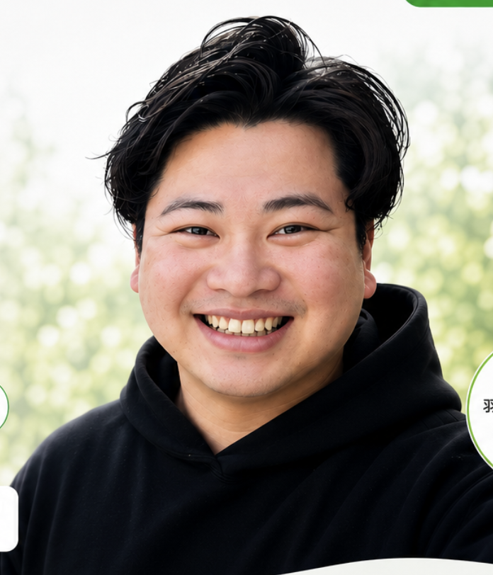

高齢の親の暮らしが心配
買い物や通院、ちょっとした外出など、家族だけでは対応が難しい。
羽曳野市を中心に対応 暮らしのお困りごと相談窓口
買い物代行・病院付き添い・スマホ相談から、信頼できる専門家のご紹介まで。地域の「困った」を整理し、解決への一歩を一緒に考えます。
相談だけでも大丈夫です。無理な営業は行いません。

YOUR CONCERNS
「誰に聞けばいいか分からない」ことこそ、まずご相談ください。
買い物や通院、ちょっとした外出など、家族だけでは対応が難しい。
LINE、Wi-Fi、写真、機種変更など、説明を聞いてもよく分からない。
相続・保険・不動産・リフォームなど、安心して相談できる専門家が分からない。
必要な書類や進め方が分からず、一人で窓口へ行くのも心細い。
困りごとが複数あり、何から手を付ければいいか分からない。
WHY CHOOSE US
地域を知っているからこそ、移動距離や生活環境も踏まえた現実的なご提案ができます。
いきなり結論を押しつけず、まず状況やご希望を丁寧にお聞きします。
売ることを目的にせず、本当に必要な支援や相談先を一緒に考えます。
相談内容に合わせ、不動産・保険・相続・リフォームなどの専門家をご案内します。
SERVICE
下記以外の内容も、まずはお気軽にご相談ください。
SERVICE 01
日常生活の中で、一人では難しいことをお手伝いします。
SERVICE 02
専門用語をなるべく使わず、分かるまで丁寧にご説明します。
SERVICE 03
相談先選びに迷う分野を整理し、適切な窓口へつなぎます。
※対応内容・料金・専門家紹介の条件は、正式なサービス開始前に確定し、このページへ順次掲載します。
MESSAGE
はじめまして。代表の中島達哉です。
営業として13年以上、多くのお客様の話を伺い、状況を整理し、解決方法をご提案する仕事に携わってきました。
暮らしの中には、専門業者へ頼むほどか分からないことや、どの窓口が正しいのか分からないことがたくさんあります。
そんな時に、まず話を聞き、必要であれば適切な人やサービスへつなぐ。羽曳野市で気軽に頼れる「最初の相談相手」を目指します。
FLOW
まとまっていなくても大丈夫です。現在の状況を簡単にお知らせください。
ご希望・ご予算・お困りの背景を丁寧にお聞きします。
できること・できないことを明確にし、必要な場合はお見積りします。
内容にご納得いただいてから、訪問・同行・ご紹介などを進めます。
CASE & VOICE
サービス開始後、許可をいただいた事例を順次掲載します。
ご相談内容、対応方法、解決までの流れを匿名で掲載予定です。
実際にご利用いただいた方の感想を、許可を得て掲載予定です。
FAQ
はい。何を頼めばよいか分からない段階でも大丈夫です。まず状況をお聞きし、対応できる内容を整理します。
初回相談は無料を予定しています。訪問や作業が必要な場合は、内容と料金をご案内し、ご納得いただいてから進めます。
羽曳野市を中心に、近隣地域も内容によって対応します。まずはお問い合わせください。
はい。離れて暮らすご家族からのご相談も受け付けます。ご本人の意思や個人情報に配慮しながら対応します。
CONTACT
相談内容が決まっていなくても大丈夫です。
LINEなら、空いた時間にメッセージを送れます。

スマートフォンのカメラで読み取るか、LINEボタンを押してください。
LINE公式アカウントを開く →LINEは24時間受け付けています。返信は営業時間内に順次行います。